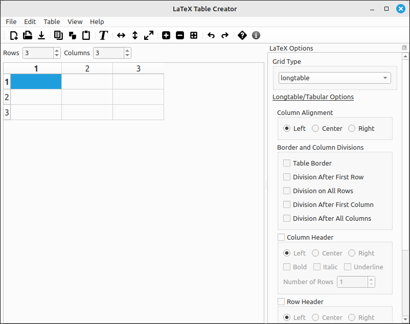

LaTeX Table Creator User’s Guide#
Introduction#
The LaTeX Table Creator is an application that allows the user to input data into a grid and export the contents to LaTeX syntax given a few options. The program is not a WYSIWYG interface and certainly does not provide a complete set of options. This program is for quick conversions of table data into either table or matrix LaTeX code. It does offer copy and paste capabilities within the program and between the program and most spreadsheets (tab delimited text transfer). In addition, there are several options for populating the grid, transposing, resizing, inserting and deleting rows and columns, undo and redo, and file saving and loading of the data grid.
The LaTeX export is done through the system clipboard. The user should populate the grid with the desired data, select the LaTeX options on the right side of the window and then copy the grid as LaTeX code. From there the user can paste the code into any editor they are using to create their document.
The program currently supports longtable, tabular, tabbing, array, matrix, pmatrix, bmatrix, vmatrix, and Vmatrix environments. When copied, the clipboard text will have a commented line of any needed packages to be included in the preamble of the document. Each of the supported environments has a set of options for that environment, which includes alignment options, border and division options, header row and column creation, automatic math mode inclusion, and matrix decorations.
This program is designed to make the creation of LaTeX tables easier but is not designed to do everything for the user. For someone who is familiar with LaTeX typesetting and the basic code for tables it will provide a nice layout that should be easy to edit and manipulate. In addition, there are options for exporting the grid contents to SageMath, Maxima, and GeoGebra code as well as [ ] and < > delimited strings that are commonly used in other packages.
Program Layout#
On the left is the data grid where you can type in or copy and paste data for conversion to LaTeX. This grid works like a standard spreadsheet but without any calculation abilities. Above the table are spinners that allow the user to resize the grid.
On the right is the LaTeX Options window. The options here depend on the grid type that is selected. When this drop-down box is changed the options for that type of LaTeX grid will be displayed. These options will be used when the user selects to copy the LaTeX code to the clipboard. This options window can be moved to the left side of the program frame by a click and drag. Similarly you can undock it from the main program window in the same way.
